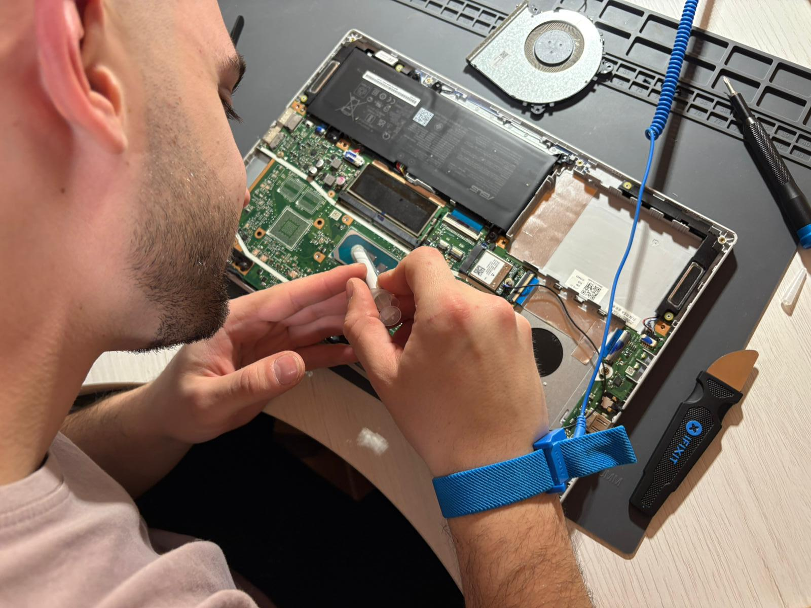

Venda i reparació d'ordinadors
Diagnosi, manteniment, muntatge i reparació d'ordinadors de sobretaula i portàtils a Gandesa i rodalies.
Solucions tecnològiques per a particulars i empreses a Gandesa i la Terra Alta. Reparació i venda d'equips informàtics, manteniment i desenvolupament d'aplicacions web, amb pressupost a mida i sense compromís.

Diagnosi, manteniment, muntatge i reparació d'ordinadors de sobretaula i portàtils a Gandesa i rodalies.
Programació de webs i aplicacions personalitzades per al teu negoci. Solucions a mida per a empreses i autònoms.
Contacta amb nosaltres per rebre assessorament personalitzat i un pressupost a mida, sense compromís.
El nostre taller està ubicat a Gandesa, capital de la Terra Alta (Tarragona). Oferim serveis informàtics per a tota la comarca: reparació a domicili, atenció en línia i entrega d'equips. No cal desplaçar-se fins a una gran ciutat — tenim la solució prop teu.
Horari d'atenció: de dilluns a divendres, de 16:00 a 20:00h.
Envia'ns un missatge per a més informació sobre els nostres serveis informàtics a Gandesa. Et responem el més aviat possible.